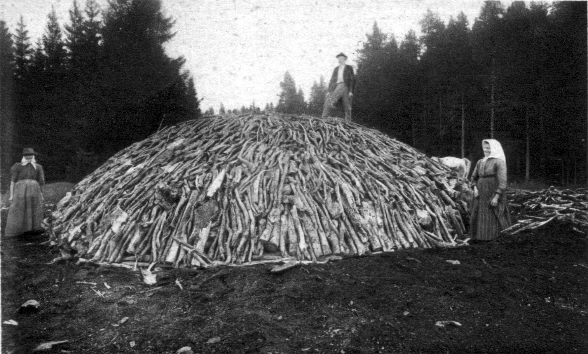
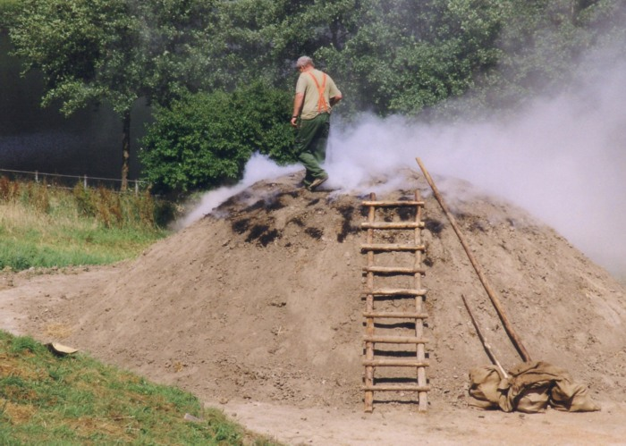

Węgiel drzewny pozyskuje się z drzew liściastych takich jak buk, grab, dąb, olcha czy brzoza. Najbardziej wartościowy pozyskuje się z wysuszonego drewna bukowego i grabowego.

Węgiel drzewny otrzymuje się w procesie spalania drewna, przy ograniczonym i kontrolowanych przez węglarza dostępie tlenu. Pierwotnym rozwiązaniem było wypalanie go w mielerzach.

Pierwszym krokiem w ich tworzeniu było wykopanie rowu o głębokości 0,2 – 0,5 metra i promieniu ok. 4 – 6 metrów. Następnie po okręgu stawiano szczapy drewniane o długości ok. 1 metra, a pozostałe miejsce wypełniano drewnem. Układano je do wysokości ok. 2 – 3 metrów. Stos okładano darnią i uszczelniano gliną. Robiono to, aby ograniczyć dostęp do powietrza oraz, aby płomienie nie wydostawały się na zewnątrz. Do obłożenia mielerza stosowano również siano oraz słomę.

Po kilkunastu godzinach gdy mielerz był już zimny oddzielano węgiel drzewny od gliny oraz pakowano. Pozyskiwano go w ilości ok. 40% masy drewna. Resztki niedopalonego drewna mogły być użyte ponownie.